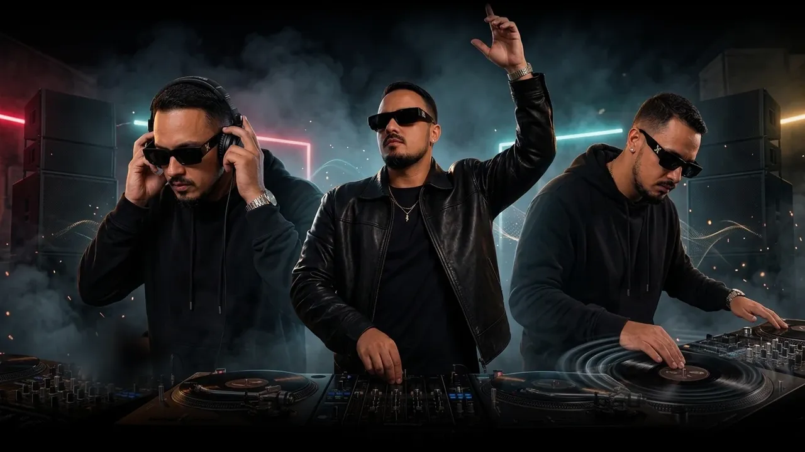

Novo álbum · de Ceilândia para o mundo
DJ KRISS STREET FREQUENCY
O grave tem endereço. E ele é a rua.
PROD. BY SUSPEYTO · 12 FAIXAS · 450 PLATAFORMAS
Prévias exclusivas · 12 faixasAperte o play. Sinta primeiro.
Os primeiros 30 segundos de cada faixa, de 0:00 a 0:30. O resto chega sexta, à meia-noite.

O discoTem som que se ouve. Tem som que se sente no peito.
Street Frequency nasce na calçada: no porta-malas aberto, no paredão que acorda a quebrada, no vinil riscado às três da manhã. DJ KRISS pega a batida que atravessou gerações, do boom bap da era de ouro ao Miami Bass, do funk ao G-funk, do R&B aos 808 do trap, e coloca tudo na mesma frequência.
Na produção, Suspeyto esculpe cada faixa para ser sentida: caixa estalada, scratch de vinil, groove lento de madrugada e um subgrave que não pede licença. Em Subzero, o grave desce até onde o corpo ainda entende como música.
A caixa d'água da Ceilândia no horizonte, o mundo como destino. Doze faixas, quatro décadas de batida, uma só noite de estreia.
- Golden Era
- Miami Bass
- Funk
- G-Funk
- R&B
- Trap 808
Mural da quebradaDeixa teu salve pro KRISS
De onde você é, qual prévia bateu mais forte, qual paredão vai tocar o disco primeiro. Escreve aí.
Seja o primeiro a mandar um salve.
Primeira filaSexta, 00:00. A rua sobe o volume.
Faça o pre-save e o álbum cai na sua biblioteca no exato minuto do lançamento.
Fazer pre-save agora